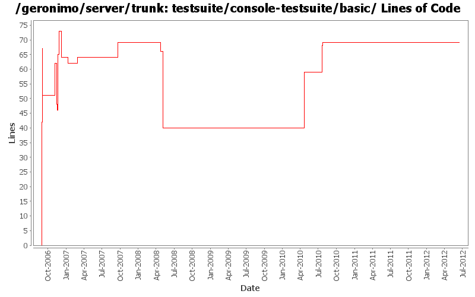

[root]/testsuite/console-testsuite/basic
 src
(0 files, 0 lines)
src
(0 files, 0 lines)
 test
(0 files, 0 lines)
test
(0 files, 0 lines)
 java
(0 files, 0 lines)
java
(0 files, 0 lines)
 org
(0 files, 0 lines)
org
(0 files, 0 lines)
 apache
(0 files, 0 lines)
apache
(0 files, 0 lines)
 geronimo
(0 files, 0 lines)
geronimo
(0 files, 0 lines)
 testsuite
(0 files, 0 lines)
testsuite
(0 files, 0 lines)
 console
(42 files, 1876 lines)
console
(42 files, 1876 lines)
 resources
(2 files, 138 lines)
resources
(2 files, 138 lines)

| Author | Changes | Lines of Code | Lines per Change |
|---|---|---|---|
| Totals | 37 (100.0%) | 214 (100.0%) | 5.7 |
| jdillon | 13 (35.1%) | 88 (41.1%) | 6.7 |
| prasad | 11 (29.7%) | 65 (30.4%) | 5.9 |
| gawor | 4 (10.8%) | 39 (18.2%) | 9.7 |
| xiaming | 2 (5.4%) | 15 (7.0%) | 7.5 |
| rickmcguire | 2 (5.4%) | 2 (0.9%) | 1.0 |
| kevan | 2 (5.4%) | 2 (0.9%) | 1.0 |
| hogstrom | 1 (2.7%) | 1 (0.5%) | 1.0 |
| djencks | 1 (2.7%) | 1 (0.5%) | 1.0 |
| dain | 1 (2.7%) | 1 (0.5%) | 1.0 |
Update trunk version to 4.0.0-SNAPSHOT
1 lines of code changed in 1 file:
[maven-release-plugin] prepare release 3.0-M2
1 lines of code changed in 1 file:
[maven-release-plugin] prepare branch 3.0-M2
1 lines of code changed in 1 file:
revert r966484 and add support for running the tests without starting a server
15 lines of code changed in 1 file:
GERONIMO-5262 Add it-manual profile and set it as the default profile
14 lines of code changed in 1 file:
GERONIMO-5262: Update corba-testsuites
19 lines of code changed in 2 files:
GERONIMO-4655 upgrade version to 3.0-SNAPSHOT, make a few things more consistent
1 lines of code changed in 1 file:
(GERONIMO-3980) Use shitty-maven-plugin instead of maven-maven-plugin to drive test builds
0 lines of code changed in 2 files:
Some updates to use the latest selenium-m-p SNAPSHOT
4 lines of code changed in 1 file:
Drop per-module legal muck
0 lines of code changed in 2 files:
Pom cleanup
0 lines of code changed in 1 file:
Update LICENSE and NOTICE files. Merge from 2.1 branch
1 lines of code changed in 1 file:
upgrade trunk to 2.2-SNAPSHOT
1 lines of code changed in 1 file:
add selenium plugin and fix console test
5 lines of code changed in 1 file:
* updated copyright date to 2007
1 lines of code changed in 1 file:
Changed trunk to 2.1-SNAPSHOT
1 lines of code changed in 1 file:
Std props
2 lines of code changed in 2 files:
* adding legal files, one testsuite at a time.
3 lines of code changed in 3 files:
* changed pom description
2 lines of code changed in 1 file:
* moved ExtendedSelenium and SeleniumSupport to TestSupport
* it took along with it the TestNG dependency.
* TestNG dependency no longer needs to be specified in testsuite poms.
0 lines of code changed in 1 file:
Dropped jdk14 testng javadocs
Using @Test for class (clarity)
Using Surefire 2.3-SNAPSHOT, as that appears to work with TestNG w/JDK 1.5 annos
Using consistent spacing between elements
Dropped unused maven-invoker-plugin config
Put versioning of plugins all in the top-level build/pluginManagement
Added missing license on new xml files
10 lines of code changed in 1 file:
* moved testng dependency down to the actual testset pom that needs it.
* it was masking junit in those poms that needed junit.
10 lines of code changed in 1 file:
* moved maven-compiler-plugin to use jdk15 for source and target.
* moved tests in console and deployment suites to use TestNG annotations.
* introduced testng.xml for basic and test-deployments testsets.
* all tests now run and pass successfully.
17 lines of code changed in 1 file:
Changed version to 2.0-SNAPSHOT
1 lines of code changed in 1 file:
* beautify pom
* execute testsuite-maven-plugin:fix-menu
* introduce <distributionManagement> and ${deployDirectory} cli param
9 lines of code changed in 1 file:
* execute testsuite-maven-plugin to generate surefire reports for suite poms
3 lines of code changed in 1 file:
* configured maven-maven-plugin to execute in 'clean' and 'site' phase
* configured m-m-p in pluginManagement of testsuite pom.xml
* configured geronimo-maven-plugin in pluginManagement of default profile in testsuite pom.xml
* start/stop webconsole car in console suite.
20 lines of code changed in 1 file:
Using maven-maven-plugin proto, with this we specify a default profile with the test setup and then an empty child profile which the child builds are invoked with
Now child poms can inherit from their direct parent, and we can put common config there
Pending a better way to invoke a set of modules.. right now you have to configure invoke each
Also, no log to file, logs are inline with the calling mvn process (as nested [INFO] [INFO] blah blah)
2 lines of code changed in 1 file:
Adding TestNG-based tests
7 lines of code changed in 1 file:
Update testsuite configuration to use latest plugin changes
Also, change basic/pom.xml to inherit from testsuite to avoid duplicate server plugin configuration from getting picked up
21 lines of code changed in 1 file:
Start of the Geronimo integration testsuite
Uses the server plugin to start/stop the server and the selenium plugin to start the selenium server
Some crude tests of the webconsole in SimpleLoginTest to show how Selenium works... needs Firefox, works on mac osx, might need additional magic for other os... not sure
42 lines of code changed in 1 file: